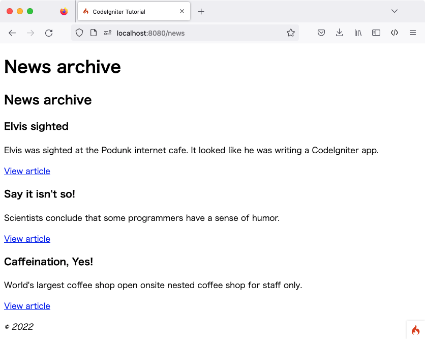

新闻版块
上一节通过编写一个引用静态页面的类，了解了框架的一些基本概念，并利用自定义路由规则优化了 URI。现在开始引入动态内容并使用数据库。
创建数据库
安装 CodeIgniter 时，应已按照 需求 设置好合适的数据库。本教程提供 MySQL 数据库的 SQL 代码，并假设已准备好用于执行数据库命令的客户端（如 mysql、MySQL Workbench 或 phpMyAdmin）。
需创建一个名为 ci4tutorial 的数据库用于本教程，并配置 CodeIgniter 调用该数据库。
使用数据库客户端连接数据库并运行以下 SQL 命令（MySQL）:
CREATE TABLE news (
id INT UNSIGNED NOT NULL AUTO_INCREMENT,
title VARCHAR(128) NOT NULL,
slug VARCHAR(128) NOT NULL,
body TEXT NOT NULL,
PRIMARY KEY (id),
UNIQUE slug (slug)
);
同时添加一些种子记录。目前仅展示创建表所需的 SQL 语句，不过在熟悉 CodeIgniter 后，可以通过编程方式实现。稍后可阅读 数据库迁移 和 数据填充 了解如何构建更高效的数据库方案。
补充一点：在 Web 发布语境下，“slug” 是指用于 URL 中标识并描述资源的、对用户和 SEO 友好的简短文本。
种子记录示例如下:
INSERT INTO news VALUES
(1,'Elvis sighted','elvis-sighted','Elvis was sighted at the Podunk internet cafe. It looked like he was writing a CodeIgniter app.'),
(2,'Say it isn\'t so!','say-it-isnt-so','Scientists conclude that some programmers have a sense of humor.'),
(3,'Caffeination, Yes!','caffeination-yes','World\'s largest coffee shop open onsite nested coffee shop for staff only.');
连接数据库
安装 CodeIgniter 时创建的本地配置文件 .env 中，应取消数据库属性设置的注释，并根据所用数据库进行正确配置。确保已按照 数据库配置 中的说明配置好数据库:
database.default.hostname = localhost
database.default.database = ci4tutorial
database.default.username = root
database.default.password = root
database.default.DBDriver = MySQLi
设置模型
数据库操作不应直接写在控制器中，而应放入模型，以便日后复用。模型用于获取、插入和更新数据库或其他数据存储中的信息。有关详细信息，请参阅 使用 CodeIgniter 的模型。
创建 NewsModel
进入 app/Models 目录，新建 NewsModel.php 文件并添加以下代码。
<?php
namespace App\Models;
use CodeIgniter\Model;
class NewsModel extends Model
{
protected $table = 'news';
}
这段代码与之前编写的控制器代码类似。它通过继承 CodeIgniter\Model 并加载数据库类来创建新模型。这样即可通过 $this->db 对象使用数据库类。
添加 NewsModel::getNews() 方法
数据库和模型设置完成后，需要一个从数据库获取所有文章的方法。为此，在 CodeIgniter\Model 中使用了 CodeIgniter 内置的数据库抽象层——查询构建器。这使得只需编写一次“查询”，即可在 所有受支持的数据库系统 上运行。Model 类还简化了查询构建器的使用，并提供了额外的工具来简化数据操作。将以下代码添加到模型中。
/**
* @param false|string $slug
*
* @return array|null
*/
public function getNews($slug = false)
{
if ($slug === false) {
return $this->findAll();
}
return $this->where(['slug' => $slug])->first();
}
通过这段代码可以执行两种不同的查询：获取所有新闻记录，或根据 Slug 获取特定新闻条目。你可能注意到 $slug 变量在运行查询前没有经过转义，这是因为 查询构建器 已自动处理。
此处使用的 findAll() 和 first() 方法由 CodeIgniter\Model 类提供。它们会根据 NewsModel 类中设置的 $table 属性自动识别要操作的表。这些辅助方法利用查询构建器对当前表运行命令，并按选定格式返回结果数组。在本例中，findAll() 返回一个二维数组。
显示新闻
查询逻辑编写完成后，需将模型与显示新闻条目的视图关联。虽然可以在之前创建的 Pages 控制器中实现，但为了清晰起见，这里定义一个新的 News 控制器。
添加路由规则
修改 app/Config/Routes.php 文件如下：
<?php
// ...
use App\Controllers\News; // Add this line
use App\Controllers\Pages;
$routes->get('news', [News::class, 'index']); // Add this line
$routes->get('news/(:segment)', [News::class, 'show']); // Add this line
$routes->get('pages', [Pages::class, 'index']);
$routes->get('(:segment)', [Pages::class, 'view']);
这能确保请求被分发到 News 控制器，而不是直接进入 Pages 控制器。第二行 $routes->get() 将带有 Slug 的 URI 路由到 News 控制器的 show() 方法。
创建 News 控制器
在 app/Controllers/News.php 创建新控制器。
<?php
namespace App\Controllers;
use App\Models\NewsModel;
class News extends BaseController
{
public function index()
{
$model = model(NewsModel::class);
$data['news_list'] = $model->getNews();
}
public function show(?string $slug = null)
{
$model = model(NewsModel::class);
$data['news'] = $model->getNews($slug);
}
}
观察代码可以发现，它与之前创建的文件非常相似。首先，它继承了 BaseController （后者继承自 CodeIgniter 核心类 Controller）。该核心类提供了一些辅助方法，并确保可以访问当前的 Request 和 Response 对象，以及用于将信息保存到磁盘的 Logger 类。
接下来定义了两个方法：一个用于查看所有新闻条目，另一个用于查看特定新闻。
随后，使用 model() 函数创建 NewsModel 实例。这是一个全局辅助函数。详情请参阅 全局函数和常量。如果不使用该函数，也可以写成 $model = new NewsModel();。
在第二个方法中，$slug 变量被传递给模型方法，模型通过此 Slug 识别并返回对应的新闻条目。
完善 News::index() 方法
现在控制器已通过模型获取了数据，但尚未展示。下一步是将数据传递给视图。修改 index() 方法如下：
<?php
namespace App\Controllers;
use App\Models\NewsModel;
class News extends BaseController
{
public function index()
{
$model = model(NewsModel::class);
$data = [
'news_list' => $model->getNews(),
'title' => 'News archive',
];
return view('templates/header', $data)
. view('news/index')
. view('templates/footer');
}
// ...
}
上述代码从模型中获取所有新闻记录并将其赋值给变量。同时将标题赋值给 $data['title']，并将所有数据传递给视图。现在需要创建一个视图来渲染这些新闻条目。
创建 news/index 视图文件
创建 app/Views/news/index.php 并添加以下代码。
<h2><?= esc($title) ?></h2>
<?php if ($news_list !== []): ?>
<?php foreach ($news_list as $news_item): ?>
<h3><?= esc($news_item['title']) ?></h3>
<div class="main">
<?= esc($news_item['body']) ?>
</div>
<p><a href="/news/<?= esc($news_item['slug'], 'url') ?>">View article</a></p>
<?php endforeach ?>
<?php else: ?>
<h3>No News</h3>
<p>Unable to find any news for you.</p>
<?php endif ?>
备注
再次使用 esc() 来防止 XSS 攻击。
不过这次增加了第二个参数 "url"。这是因为攻击模式会随输出内容的上下文环境而变化。
此处通过循环遍历并显示每条新闻项目。可以看到，模板由 PHP 和 HTML 混写而成。如果倾向于使用模板语言，可以使用 CodeIgniter 的 视图解析器 或第三方解析器。
完善 News::show() 方法
新闻列表页已完成，但还缺少显示单条新闻的页面。之前创建的模型可以直接支持此功能。只需在控制器中添加少量代码并创建新视图即可。回到 News 控制器，使用以下内容更新 show() 方法：
<?php
namespace App\Controllers;
use App\Models\NewsModel;
use CodeIgniter\Exceptions\PageNotFoundException;
class News extends BaseController
{
// ...
public function show(?string $slug = null)
{
$model = model(NewsModel::class);
$data['news'] = $model->getNews($slug);
if ($data['news'] === null) {
throw new PageNotFoundException('Cannot find the news item: ' . $slug);
}
$data['title'] = $data['news']['title'];
return view('templates/header', $data)
. view('news/view')
. view('templates/footer');
}
}
别忘了添加 use CodeIgniter\Exceptions\PageNotFoundException; 来导入 PageNotFoundException 类。
这里不再调用无参数的 getNews() 方法，而是传递 $slug 变量，从而返回特定的新闻条目。
创建 news/view 视图文件
最后一步是在 app/Views/news/view.php 创建对应的视图。在该文件中加入以下代码。
<h2><?= esc($news['title']) ?></h2>
<p><?= esc($news['body']) ?></p>
在浏览器中访问新闻页面（例如 localhost:8080/news），即可看到新闻列表，点击每条新闻对应的链接可查看全文。
